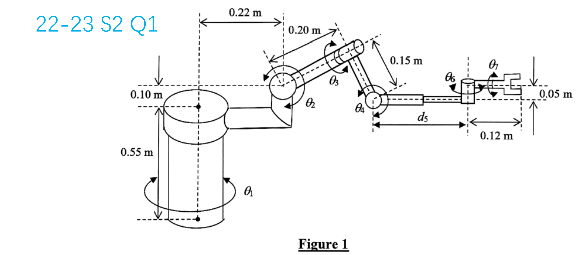

EE6221 · Seven-joint D–H stretch
Source and scope: adapted as an answer-free practice page from the user-supplied 6221 tutor deck, slide 11, which labels this diagram “22–23 S2 Q1.” The deck appears to review a semester examination; it does not identify this as a past Quiz 1 paper. Its handwritten example answer is on slide 12 and is deliberately omitted here.
This is a tougher transfer exercise than Mock 3 or Mock 4. The seven-joint figure and dimensions come from the tutor slide. The prompts below paraphrase its two subquestions; no complete arm-matrix multiplication is required.

Part (a) · Link-coordinate diagram (12 marks)
Using the standard Denavit–Hartenberg algorithm, draw coordinate frames {0} through {7}. Show each joint-axis direction z, choose and label each common-normal direction x, place every origin, then complete the right-handed frames. State any frame-direction choice that differs from the diagram's implied reference orientation.
Part (b) · Kinematic parameters (8 marks)
From your own frame diagram, fill the four parameters for every joint. Mark which entry in each row is the joint variable. Use metres and radians, and keep joint variables symbolic. Your table must agree with your drawing; D–H frames are not unique.
| Joint k | θk | dk (m) | ak (m) | αk (rad) | Variable |
|---|---|---|---|---|---|
| 1 | |||||
| 2 | |||||
| 3 | |||||
| 4 | |||||
| 5 | |||||
| 6 | |||||
| 7 |